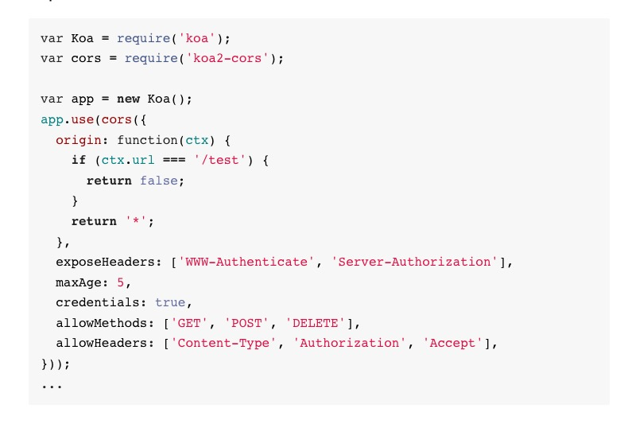
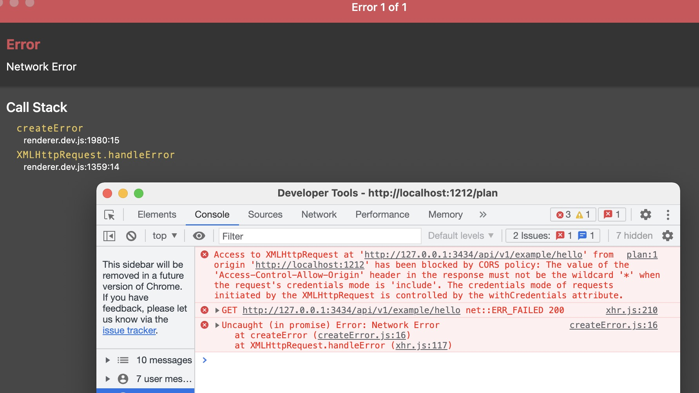

问题记录
记录什么?
记录开发一个前后端分离的窗体程序时遇到的一些 bug 和一些不太熟悉知识点.
项目技术栈: react + electron + koa2
1. 使用 koa2-cors 中间件解决跨域后为什么还是提示跨域的问题
跨域应该是一个老生常谈的问题了, 这里不过多解释. 在开发环境上, 跨域问题前后端都能进行解决. 本项目中采用服务端使用koa2-cors 中间件来进行解决.
按照包的官网进行配置

前端调用接口

可以看到并没有解决跨域问题, 但是 Google 明明告诉我这个包就能解决跨域问题啊 😫😫😫
继续Google 后无果, 于是冷静下来分析报错信息, 发现这次报错信息和以往的跨域报错信息并不相同, 最后多了一段话:
The value of the 'Access-Control-Allow-Origin' header in the response must not be the wildcard '*' when the request's credentials mode is 'include'. The credentials mode of requests initiated by the XMLHttpRequest is controlled by the withCredentials attribute.
也就是说 这里的 origin 在包含凭证信息时并不能设置为 *. 于是回到前端项目中发现 axios 的配置中设置了
axios.defaults.withCredentials = true;
该配置表示如果前端项目在跨域的情况下能够携带 cookies 信息.
而为什么当包含凭证时不能设置为 * 呢?
通过 MDN 得知:
对于没有凭据的请求（没有
HTTP cookie或HTTP认证信息的请求），值*仅作为特殊的通配符值。 在具有凭据的请求中，它被视为没有特殊语义的文字标头名称*。 请注意，Authorization标头不能使用通配符，并且始终需要明确列出。
而要在携带凭据的同时也要支持跨域便得这样配置:
origin(ctx) {
return ctx.header.origin ?? '';
},
反思:
- 各种无脑
cv操作... - 还是不太熟悉
http协议的各种配置...